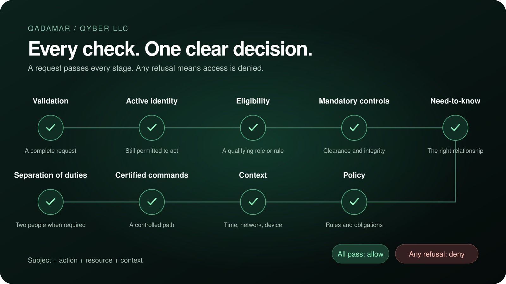

The access models
Seven models. One decision engine.
OPEN-SOURCE AUTHORIZATION
Who can see it. Who can change it.
And exactly why.
Export · CASE-7
Trusted network
With the rules and
the reasoning attached.
Illustrative request · Fictional demo data · Self-hosted engine
POLICY, MADE VISIBLE
Roles start the conversation. Classification, relationships, content, context and separation of duties complete it. A permit rule cannot bypass mandatory controls.

Inspect the rules, relationship paths and obligations behind each access decision.
Review a policy change’s impact before a second person approves it.
Host the engine yourself. Apply the decision and its obligations in your application.
THE PETRA FILMS / IN ENGLISH
Three films, narrated by Petra. English captions are available in every player.
Seven models. One decision engine.
Government, banking, healthcare and enterprise applications.
Payments, emergencies, clearance, context and audit.
EXPLORE AN ENGINE RESULT
Amira has Alice’s demo roles, clearance and relationship memberships. Choose an action and a network to inspect CASE-7.
Loading engine results…
These are reproducible fixture results evaluated by the real Qadamar engine at build time. Fictional data, fixed clock: 8 November 2026. The hosted page does not access a live protected system.
Run new simulations, manage policies and inspect the audit trail on your own installation.
The console link works on the Mac running the Qadamar demo.
To open the console, download the source, install dependencies and run bash scripts/delivery/start-demo.sh. Then open http://127.0.0.1:8789 on that computer.
TAKE IT WITH YOU
The engine is licensed under Apache 2.0. Download the code, explore the architecture and use the H Portal identity.
The engine is a classical policy evaluator; the Hadamard reference belongs to its visual identity.